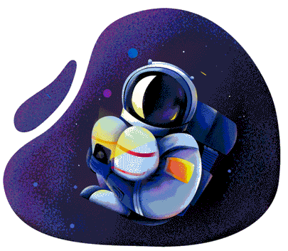
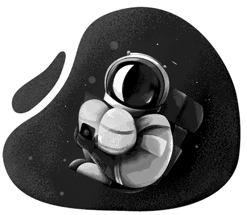

404 Lost in Space
Ekonomistas Žygimantas Mauricas savaitę keliavo netikėtu maršrutu – kalnų dviračiu važiavo palei Lietuvos ir Lenkijos pasienį ir galiausiai pasiekė Šilutę, per šią kelionę jis numynė 800 kilometrų.
go home back

